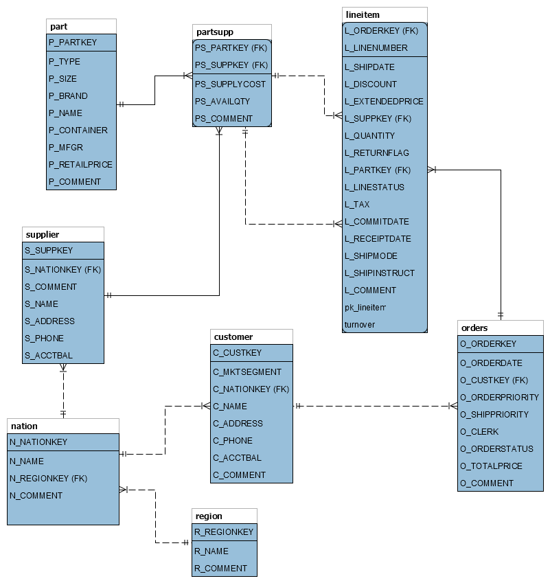

DWD-Query Tool
This tool is being developed for testing data warehouse query performance. The goal is to compare DW query performance using 3 different models:
- Generic DWH
- Star Schema
- Snowflake Schema
Data Source
Data come from TPC-H Decision Support Benchmark. More info at http://www.tpc.org/tpch/
Methodology
The TPC-H DB was first generated using HammerDB script with different sizes. Pentaho BI was used to ETL TPC-H to Star and Snowflake schemas. And this application was developed to query DW designs.
The Generic DWH has 3 different DBs running:
- Dynamic: the algorithm checks if there are already saved facts for the selected ratio-dimension combinations. If there are no facts saved yet, the system will create new reference objects if needed, and insert new facts.
- No Combinations: static DB where only standard generic DWH queries are executed.
- All Combinations: static DB where all possible ratio-dimension combinations are already stored.
Those databases sizes were created using HammerDB, then, ETL for each DW model:
- Mini: 100 orders ~ 450KB
- Small: 15.000 orders ~ 15MB
- Scale Factor (SF) 1: 1.500.000 orders ~ 3.4 GB
- Scale Factor (SF) 10: 15.000.000 orders ~ 20.5 GB
Technical Stack
- Spring v5.1.7.RELEASE
- Spring Boot 2.1.5.RELEASE
- Java 11.0.3
- Bootstrap 4.3.1
- IntelliJ IDEA 2019

Code available on GitHub
Questions or suggestions: pedro911@gmail.com
Pedro Marangoni